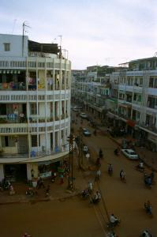
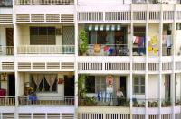
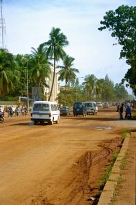
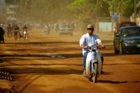

|
Lundi 16 juillet
Hier soir, à la table du resto de notre guesthouse, on a eu la chance de s'asseoir
côté de Denis, un québécois qui traîne à Phnom Penh depuis un petit bout de
temps. Il est avocat, en tout cas il a le diplôme canadien. Mais il n'a pas
exercé depuis plusieurs années. Ca fait 5 ans qu'il est installé en Asie. Avant
Phnom Penh, il était en Chine. Il parle et écrit d'ailleurs le chinois. En ce
moment, il cherche un boulot. Mais ça n'a pas l'air de trop le perturber, il
a de quoi vivre. Il faut dire que, selon ses dires, en bossant 6 mois en Chine
comme professeur d'anglais, il a de quoi se laisser vivre ici pendant 2 ans!
Ca semble plausible lorsqu'on sait qu'une chambre coûte 50$ par mois, un repas
autour de 1$, une prostituée à partir de 2$ - ici, ça compte – et 1 kilo de
marijuana se négocie autour de 20$. Et 1 kilo, ça fait un paquet de pétards!
Il réagit lorsqu'il m'entend prononcer le mot "sympa" en parlant de notre tour
en Asie du sud-est. Non, pour lui, ici, c'est tout sauf "sympa". Pourtant il
glande depuis quelques temps... Et effectivement, il nous raconte des histoires
pas "sympas" du tout sur la vie ici. Comme par exemple la corruption des flics
dans la ville, qui te raquètent la nuit s'ils te voient après 23H00. Ils peuvent
essayer de t'extorquer 20$, mais en principe tu t'en sors pour 1$. C'est un
principe de base en Asie, tout se marchande, même la corruption. Ou alors, il
y a le problème des armes à feux. Tout le monde en a une et le désarmement est
un des gros boulot des autorités aujourd'hui. En ville, sur la porte d'une banque,
on verra d'ailleurs à côté des autocollants Visa et Mastercard, un gros pistolet
barré. Interdiction d'entrer armé!
Et puis, on passe du "pas normal" au carrément répugnant. Il a parlé pas plus
tard qu'hier avec un commerçant malaisien venu à Phnom Penh acheter des vierges
vietnamiennes. Pas des bibelots en plastique pour les revendre à Lourdes. Non,
des jeunes filles vietnamiennes vierges! Avec le SIDA, il paraît qu'il y a un
vrai marché... Et il parlait, nous dit Denis, de son business comme ça, librement,
normalement. Un peu comme s'il s'agissait de vierges en plastoque justement...
Alors, non, notre ami Denis ne trouve pas que le Cambodge soit un pays "sympa".
Mais c'est normal, pense-t-il, de le trouver "sympa" quand on ne fait que passer...
Je proteste un peu pour la forme. Debouche tes oreilles Denis! J'ai dit qu'on
avait passé 3 mois dans la région et que c'était "sympa"... d'avoir un aperçu
de tous ces pays. Ce n'est pas la première fois qu'on nous tient ce discours.
Mais moi, je trouve qu'on peut rester un mois, six mois, cinq ans dans un pays
et végéter sans rien découvrir du tout, si ce n'est le petit monde clos dans
lequel le quotidien a tendance à nous enfermer. C'est sûr qu'avoir du temps
est un précieux avantage. Mais l'important c'est aussi d'être intéressé, curieux,
attentif et observateur. Faudrait lui péter l'histoire du Chtit Lolo qui fait
partie de l'élite de la perspicacité et l'absence des antennes paraboliques
au gros Denis! Mai bon, ce n'est pas le débat...
Pour lui montrer quand même qu'on ne voyage pas comme des ballots qui s'exstasient
devant chaque scène rurale... heu... en fait, si, on s'exstasie un peu quand
même... Autant pour moi. Donc, pour lui montrer qu'on ne voyage pas comme des
ballots qui ne font que s'exstasier devant chaque scène rurale, je sors un bouquin
qu'on a déniché à Saïgon. Ecrit par un journaliste (?), il décrit le régime
politique mafieux en place au Cambodge et le tout petit monde des expatriés
qui gravitent autour de Phnom Penh... dont Denis fait partie en quelque sorte.
Et même plus que ça. Il est tout excité en voyant le livre. Un pote lui a raconté
qu'on parlait de lui dans ce bouquin. Mais bon, il n'a pas encore eu le temps
de vérifier. Ca fait pourtant 2 ans qu'il est sorti ce bouquin. De toute façon,
il nous dit qu'il a "la conscience propre" et qu'il n'a pas fait "pire que les
autres". Alors, ça va, les autres sont juste décrits comme de gros légumes installés
dans le pays pour la drogue et les filles... rien de grave.
Le monde des expatriés -entendez les occidentaux installés à l'étranger- peut
parfois être surprenant. Il y en a de très bien, on en a croisé et on en connaît
même bien deux en Thaïlande qui sont tout à fait fréquentables. Mais certains
autres ne sont visiblement là que pour l'argent et la vie facile qui va avec
et ne sont absolument pas intéressés par les gens qu'ils croisent et leurs richesses
culturelles. Un étudiant français en stage dans le sud du Vietnam nous a expliqué
combien il était pénible de discuter avec tous ces gens à Saïgon qui ne pensent
qu'à l'argent et qui méprisent les vietnamiens. D'après lui, bien un tiers des
expatriés qu'il a croisés. Consternant.
La campagne traversée hier nous a laissé l'impression d'un pays très pauvre,
plus pauvre que le Laos et le Vietnam. L'impression est la même lorsqu'on voit
le boulevard Monivong qu'on remonte pour aller à l'ambassade de France. Il s'agit
d'une artère de la capitale, mais le goudron ne recouvre que la moitié de la
largeur. Les véhicules qui descendent vers le sud de la ville roulent sur la
terre, une terre rouge qui se soulève pour former un nuage de poussière au dessus
du boulevard. Rien d'étonnant lorsqu'on sait que ce pays sort d'une guerre civile
et d'un génocide. Ce qui est plus étonnant par contre, ce sont les voitures.
Les gens dans les campagnes semblent ne rien posséder, les rues et les routes
sont explosées un peu partout, mais à Phnom Penh on croise sans arrêt de gros
4X4 top frime et des Mercedes flambant neuves. Mais surtout, c'est leur nombre
qui surprend. On a traversé le Laos où les voitures particulières sont presque
inexistantes et le Vietnam où elles sont rares. Même Saïgon la moderne et la
dynamique n'en possède pas une si forte proportion. En fait, depuis Bangkok,
c'est la première fois qu'on voit pratiquement plus de voitures que de 2 roues!
Suite du voyage : Phnom Penh
|

Cambodge
Phnom Penh
|

Cambodge
Phnom Penh
|

Cambodge
Phnom Penh
|

Cambodge
Phnom Penh
|

Cambodge
Phnom Penh
|
|
|